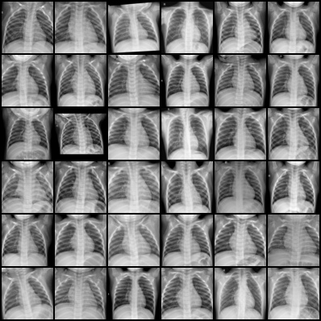
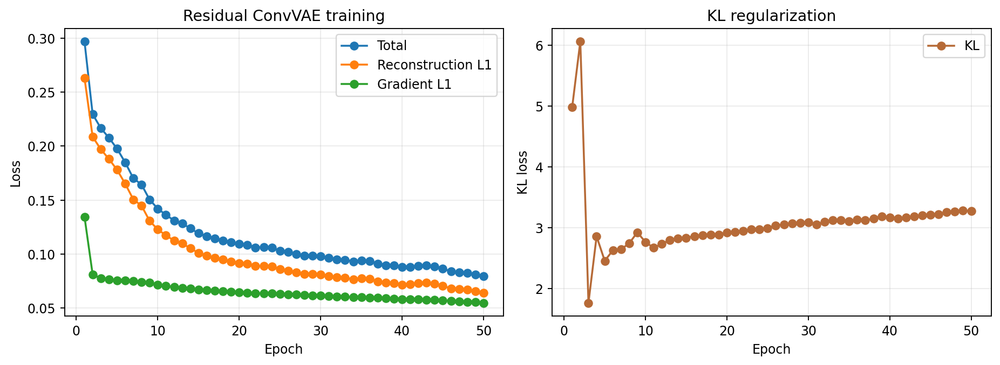
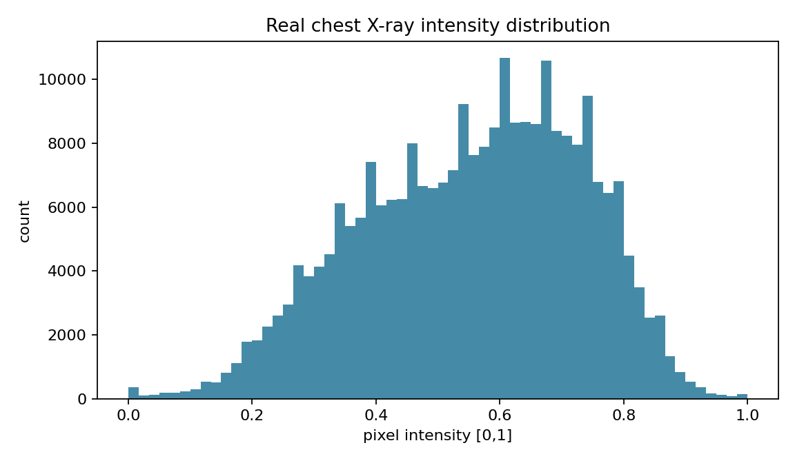

实践项目参考答案 02：胸片 DCGAN 图像生成
本实践在 Kaggle Notebook 中读取真实胸片，训练轻量 DCGAN，观察生成器与判别器的训练变化，并比较训练早期和后期的生成样本。
以下内容按 Notebook 的执行顺序说明数据检查、代码补全、训练、评价和输出文件。
数据读取与检查
从训练目录读取真实胸片，统一为 64×64 单通道并归一化到 [-1,1]。先保存真实样本网格和像素强度直方图，再开始训练。
参考答案
transform = transforms.Compose([
transforms.Grayscale(1),
transforms.Resize(72),
transforms.CenterCrop(64),
transforms.ToTensor(),
transforms.Normalize([.5],[.5])
])
real, _ = next(iter(loader))
utils.save_image((real[:36]+1)/2,
OUT/'task2_real_xray_grid.png', nrow=6)
real_display = ((real+1)/2).clamp(0,1)
plt.hist(real_display.flatten().numpy(), bins=60)
plt.savefig(OUT/'task2_intensity_histogram.png', dpi=160)生成器结构
从 1×1 潜变量开始，五次转置卷积扩大到 64×64。
参考答案
self.net=nn.Sequential( nn.ConvTranspose2d(100,256,4,1,0),nn.BatchNorm2d(256),nn.ReLU(True), nn.ConvTranspose2d(256,128,4,2,1),nn.BatchNorm2d(128),nn.ReLU(True), nn.ConvTranspose2d(128,64,4,2,1),nn.BatchNorm2d(64),nn.ReLU(True), nn.ConvTranspose2d(64,32,4,2,1),nn.BatchNorm2d(32),nn.ReLU(True), nn.ConvTranspose2d(32,1,4,2,1),nn.Tanh())
判别器更新
生成图像在判别器阶段 detach，防止梯度更新生成器。
参考答案
opt_d.zero_grad() z=torch.randn(b,LATENT,1,1,device=DEVICE) fake=G(z) loss_d=criterion(D(real),ones)+criterion(D(fake.detach()),zeros) loss_d.backward();opt_d.step()
生成器更新
生成器目标是让判别器把生成图像判为真实。
参考答案
opt_g.zero_grad() z=torch.randn(b,LATENT,1,1,device=DEVICE) fake=G(z) loss_g=criterion(D(fake),ones) loss_g.backward();opt_g.step()
固定噪声网格
每个 epoch 使用同一固定 z，变化来自模型学习而不是随机输入变化。
参考答案
with torch.no_grad(): fake=G(fixed_z).cpu() utils.save_image((fake+1)/2,'task2_generated_samples.png',nrow=6)
模式坍塌检查
两两距离只是一项轻量多样性指标，还要目视检查重复结构。
参考答案
flat=generated.flatten(1) dist=torch.cdist(flat,flat) diversity=dist[torch.triu(torch.ones_like(dist),diagonal=1).bool()].mean().item()
结果阅读与文件核对
实际运行结果



使用 1000 张胸片训练 4 轮，潜变量维度为 100；最后一轮生成器平均损失 6.0221351，判别器平均损失 0.0328187，生成样本两两距离均值 21.0089512。
比较真实胸片网格与生成网格的肺野轮廓、左右对称性、亮度分布、局部伪影和样本多样性，并核对四个指定输出文件和一个补充输出。
参考答案
指定输出： task2_real_xray_grid.png task2_intensity_histogram.png task2_generated_samples.png task2_pytorch_result.json 结果分析结构： 1. 描述生成图中的胸廓、肺野和整体灰度； 2. 指出模糊、棋盘格或异常黑边； 3. 比较不同样本的轮廓和纹理差异； 4. 结合 G/D loss 说明训练过程。